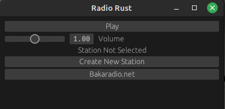
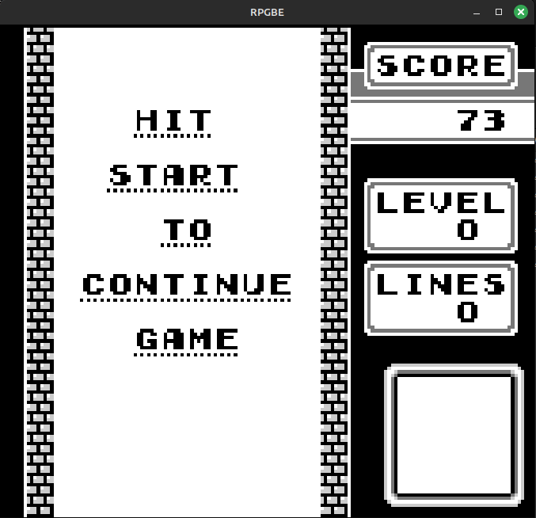
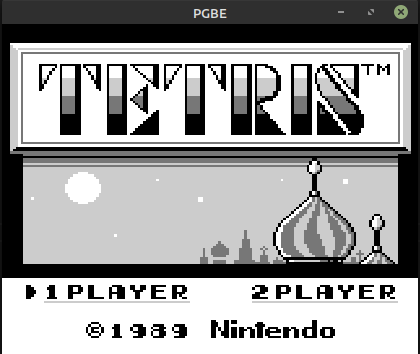

Radio Rust A minimalist rust based Internet Radio Player using eframe, Reqwest, and Rodio. Uses .pls files to play internet ratio streams. Currently no support for .m3u files. Github Link 
RPGBE (Rustified Palaster's Gameboy Emulator) Written in Rust Uses SDL2 for video and input Passes Blargg's cpu_instrs.gb Github Link 
PGBE (Palaster's Gameboy Emulator) My first emulator Written in C99 Uses SDL2 for video and input Passes Blargg's cpu_instrs.gb Github Link 